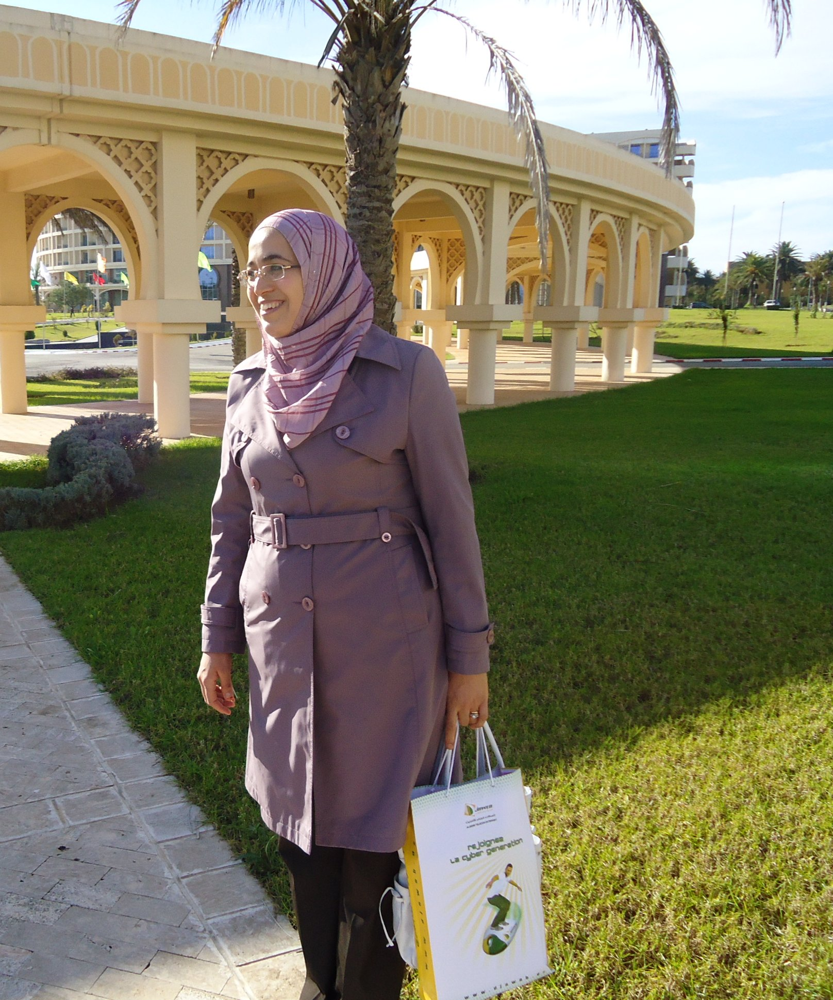

مرحباً
، أعمل حاليا في مديرية البريد والمواصلات السلكية واللاسلكية لولاية بالبويرة ،الجزائر.
لديّ خبرة تزيد عن عشرين سنة كموظفة في القطاع العام.احب مجال تخصصي الذي مافتأ يتطور منذ تخرجي. أحاول تثقيف نفسي بنفسي حيث أن عملي روتيني ولا يوفر أي تحديات، لديّ معرفة متخصصة في البرمجة، أهتم كثيرا بأنظمة المعلومات الجغرافية و المكانية مفتوحة المصدر، أمن التطبيقات، إدارة الهوية والوصول، تصميم مواقع الويب.
لدي أيضا خبرة في التعليم حيث أنني بدأت مساري المهني بالتدريس في مدرسة خاصة لمدة عام، عدت قبل عامين للتدريس بجامعة البويرة، أؤمن أن التعليم هو جوهر التَعَلُّم و ترسيخ المعرفة الشخصية.
بصفتي مُدْرِكة بمخاطر التقدم التقني و الفجوة الرقمية،أخطط لتعليم الآخرين مبادئ اﻷمان و اليقضة عبر إطلاق مبادرة التعرف على لِينُكس التي ستتزامن مع تقديم معلومات عن اﻷخطار السيبرانية.
هواياتي متنوعة: المطالعة ، التاريخ، الجغرافيا، الخياطة، الطرز، الطبخ

أخطر ما في العقل أن يتحوّل إلى صندوق مغلق
كل فكرة لا نراجعها… تبدأ باستعبادنا من حيث لا نشعر.
الوعي لا يعني أن تملك إجابات جاهزة،
بل أن تسأل الأسئلة التي لا يجرؤ غيرك على طرحها....لِقَائِلِهَا
حاليا تستحوذ عليّ فكرة التحول إلى لِينُكس تستغرِقُني و تُأَرِقُنِي
لا أدّعي التفوّق في هذا المجال، بل العكس أناشد المختصين لمساعدتي، لا يمكنني القيام بذلك لوحدي
أدعو خاصة الطلبة المنتقلين إلى السنة الثانية إعلام آلي بجامعة البويرة للإنخراط في هذه المبادرة ستكون مدخلا رائعا لمادة أنظمة التشغيل